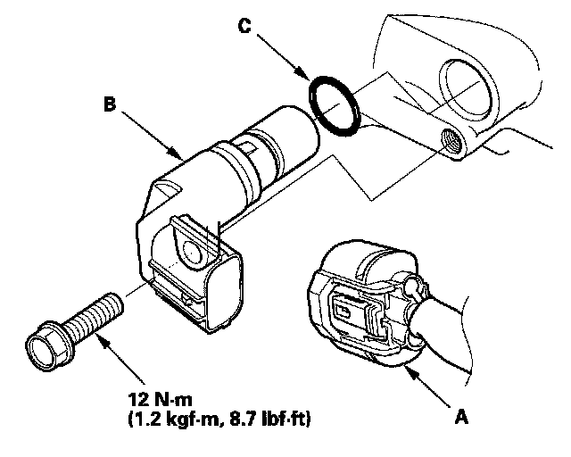

Transmission Speed Sensor: Service and Repair
Output Shaft (Countershaft) Speed Sensor Replacement
1. Disconnect the output shaft (countershaft) speed sensor 3P connector (A).
2. Remove the output shaft (countershaft) speed sensor (B).
3. Install the parts in the reverse order of removal with a new O-ring (C).